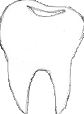
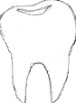

Olen valmistunut hammaslääkäriksi v. 2001 Helsingin Yliopistosta, minkä jälkeen olen tehnyt monipuolisesti hammaslääkärin töitä sekä terveyskeskuksessa että yksityisellä. Olen erikoistunut suu- ja leukakirurgiaan v. 2011. Runsaan 5 vuoden erikoistumisjaksosta olen tehnyt noin 4 vuotta Tyksissä eli Turun Yliopistollisessa keskussairaalassa ja viimeisen erikoistumisvuoteni olin Addenbrooksin sairaalassa, Cambridgessa, Englannissa.
Erikoistumisajan jälkeen olin vielä jonkin aikaa Tyksin suu- ja leukasairauksien klinikalla, kunnes v. 2015 muutin perheeni kanssa takaisin Raumalle, kotikaupunkiini.
Nykyään teen omalla vastaanotollani oikomishoitoa lukuun ottamatta lähes kaikenlaista hammashoitoa. Erityinen mielenkiintoni ja osaamisalueeni on hammasimplantit eli keinojuuret.
| Toimenpiteet | Hinta | Omavastuuhinta |
|---|---|---|
| Tarkastus | 75 € | 59,50 € |
| Hammasröntgen | 38 € | 32 € |
| Panoraamaröntgen | 99 € | 90 € |
| KKTT-kuvaus (kartiokeilatomografia) | 179 € | 140 € |
| Hammaskiven poisto | 52-113 € | 46-100 € |
| Yhden pinnan paikka | 90 € | 80 € |
| Kahden pinnan paikka | 137 € | 120 € |
| Kolmen pinnan paikka | 158 € | 139 € |
| Hampaan juurikanavien avaus | 125-200 € | 115-181 € |
| Hampaan juuren täyttö | 109-189 € | 100-170 € |
| Keraaminen kruunu | 850 € | 850 € |
| Hampaan poisto | 103 € | 90 € |
| Vaativa hampaan poisto | 153 € | 130 € |
| Leikkauksellinen hampaan poisto | 344,60 € | 290 € |
| Hampaan juurenpään resektio | 329,90 € | 300 € |
| Implanttihammas
Sisältää implanttileikkauksen ja implantin päälle tehtävän keraamisen kruunun. |
n. 2300 € | n. 2300 € |
Hinnat sisältävät jo erikoishammaslääkärikorotuksen.
Hintoihin ei myöskään lisätä enää toimisto- tai laskutuslisiä.
Vastaanoton edessä kadulla on vapaita parkkipaikkoja.
Röntgenkuvantamisen osalta käytössä on uusi panoraama- ja kktt-laite (kartiokeilatomografia), jolla saa myös kolmiulotteisia leikekuvia.
Vastaanotolla on käytössä modernit välineet ja tarve-aineet sekä myös osaamista niiden käyttöön.

"Implantteja voidaan käyttää korvaamaan yksittäisiä tai useampia menetettyjä hampaita tai vaikkapa antamaan lisätukea huonosti pysyvälle kokoproteesille. Luupuutos tai poskiontelon läheisyys on vain hyvin harvoin este implanttien asettamiselle nykyisten keinoluumateriaalien aikana."

Puhelin
Osoite